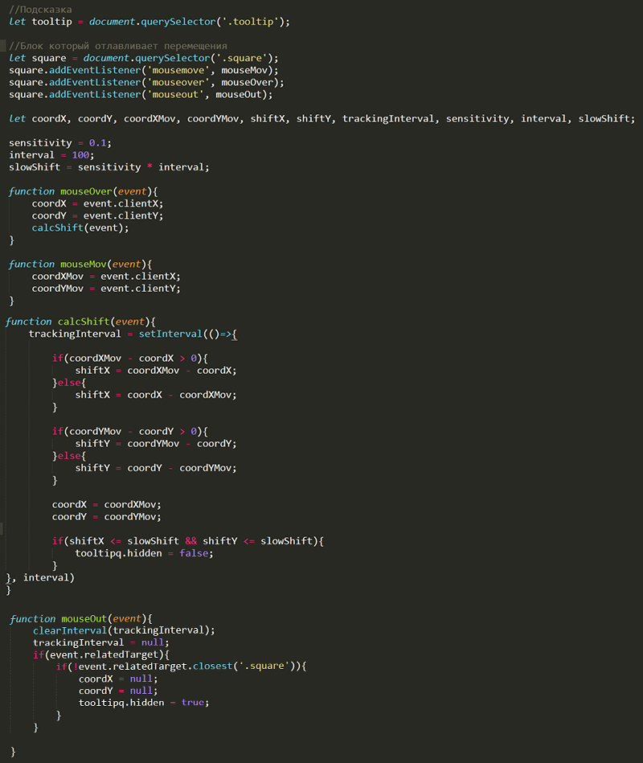

Детальнее разобрался с Drag'n'Drop с событиями мыши, ну и решил две задачи. Также добавил на сайт навигацию по блогу. На данный момент уже чувствую, как с каждым днем становится тяжелее вести блог, надо продумывать пути к автоматизации.
11.02.2021
Сегодня на занятия было всего 2 часа, успел только ознакомиться с Drag'n'Drop с событиями мыши и частично решить первую задачу.
10.02.2021
Решил задачу, выполнил немного по своему.
Мой вариант решения

09.02.2021
Сегодня все-таки придумал решение для задачи, реализовал на 85%. На данный момент понял как отлавливать и правильно обрабатывать события мыши, а также измерять скорость передвижения курсора.
08.02.2021
Сегодня было всего пара часов, все провел над задачкой, так и не решил её. Завтра буду атаковать!
07.02.2021
Начал ознакомление с CSS разделами [псевдоэлементы], [селекторы и их комбинации].
Досмотрел все теги + их атрибуты, из 118-ти, 43 тега оказались незнакомыми. По знакомым просто обновил знания.
06.02.2021
За сегодня посмотрел очень много тегов и их атрибутов. Многие из них знакомы и применялись на практике. Но были и такие которые первый раз увидел. Шел по алфавиту остановился на <samp>
Наткнулся на неполноту информации на htmlbook.ru нашел инфу что перестали поддерживать сайт и переехали на WebRef.
05.02.2021
Начал детально разбираться с HTML тегами. Просто иду по списку и знакомлюсь досконально с самим тегом и его атрибутами.
Сегодня полностью пролистал документацию по Git. Все основные операции изучил и попробовал применить. Сильно в дебри не вдавался, если что всегда можно заглянуть в Документацию Git чтобы посмотреть интересующий вопрос.
04.02.2021
Сегодня плотно познакомился с Git и GitHub. Cоздал репозиторий для данного сайта, ссылка на GitHub. Сейчас еще изучаю Документация Git. Закончил на [2.6 Основы Git - Работа с метками]
03.02.2021
Начал знакомство с командной строкой. Немного попробывал, вроде получается. Выписал некоторые команды в блокнот. (DIR, CLS, CD, CD.., MKDIR, RMDIR, START, ECHO, DEL, NUL>).
Начал знакомство с Git и GitHub. Зарегистрировался, думал поставить Desktop версию, но все пошло не поплану... При установке потребовало обновление KB2533623, ладно обновил, потом еще обновил .NET Framework. Вроде все ок, но не тут то было, завершилась установка GitHub Desktop, запускаю а там черный экран. Погуглил, нечего не нашел, попробывал поиграться с совместимостью и пробывал открыть с правами администратора, в конечном итоге ничего. Понял что копать в том направлении не стоит и пошел на YouTube искать видео как работать с Git через терминал. Наткнулся на канал Гоша Дударь и вот его плейлист о Gite. Уже установил Git, ну и также поставил Terminus для Sublime Text 3 (В Sublime из коробки оказывается нет терминала).
Поискал инфу про сертификаты. Понял, что надо сменить хостера)) В конце марта буду переезжать на fornex.com
Многие хостеры предоставляют бесплатные сертификаты, а мой продает минимально за 990р...
Загрузил сайт на сервер. Все работает, но браузер ругается на SSL сертификат. Надо поискать решение...